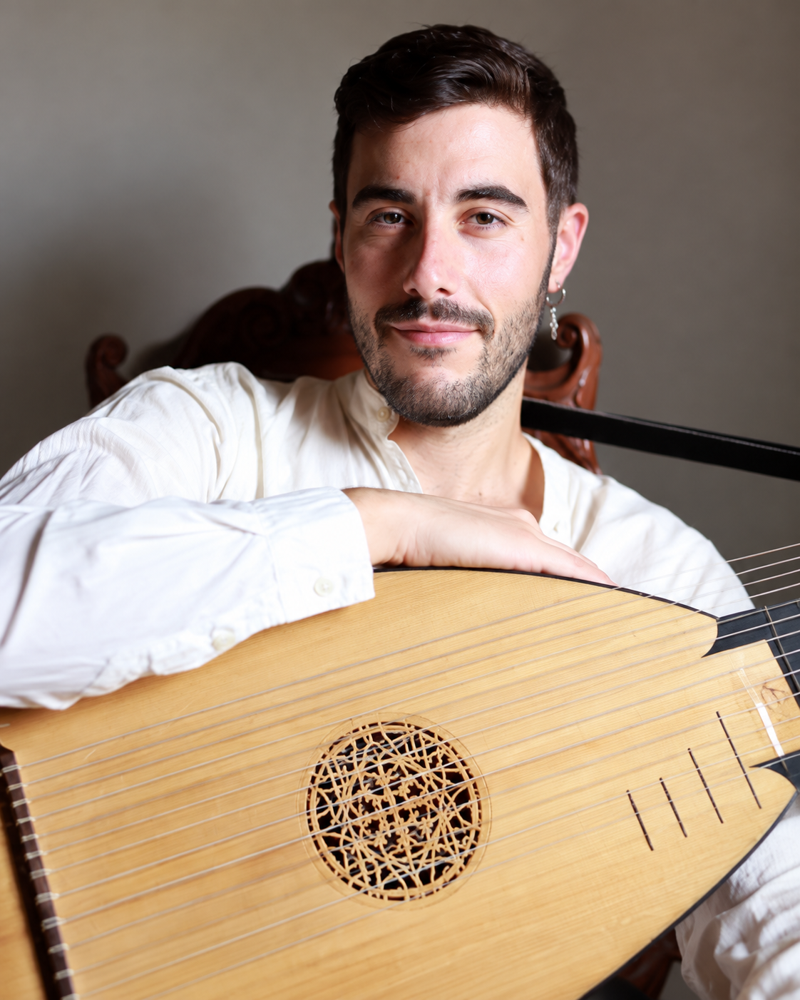

Rafael Arjona Ruz
Muzika iz vremena Servantesa
Španija
7. oktobar 2026.
20:00
vihuela • barokna gitara • lauta
Muzej Vojvodine
Dunavska 35
Novi Sad
O umetniku
Rafael Arjona Ruz je španski lautista i gitarista specijalizovan za istorijske trzalačke instrumente renesanse i baroka. Odrastao je u okolini Kordobe, gde je veoma rano razvio interesovanje za špansku gitaru, a tokom studija muzikologije otkrio je svet instrumenata rane muzike.
Usavršavao se u Kordobi, Granadi, Sevilji i na Kraljevskom konzervatorijumu u Hagu, sarađujući sa umetnicima kao što su Antonio Duro, Zoran Dukić, Mike Fentross i Joachim Held. Dalje studije nastavio je na Univerzitetu umetnosti u Cirihu u klasi Eduarda Egüeza.
Kao izvođač na lauti, teorbi i baroknoj gitari sarađivao je sa brojnim renomiranim ansamblima, među kojima su Netherlands Bach Society, Dunedin Consort, Capella de Ministrers, Orquesta Barroca de Sevilla, La Guirlande i Stradella Young Project.
Posebno ga interesuje ponovno oživljavanje zvuka renesansnih i baroknih trzalačkih instrumenata, kao i istraživanje repertoara koji povezuje muzičke tradicije Španije sa širim evropskim kulturnim prostorom.
O programu
Koncert „Muzika iz vremena Servantesa“ vodi publiku u zvučni svet Iberijskog poluostrva na prelazu iz renesanse u barok — vreme u kojem su vihuela, lauta i rana gitara bile među najvažnijim instrumentima kako dvorskog, tako i intimnog kućnog muziciranja.
Program je posvećen repertoaru koji pripada kulturnom i umetničkom okruženju Španije 16. i ranog 17. veka, odnosno vremenu Migela de Servantesa. Kroz različite istorijske trzalačke instrumente Rafael Arjona Ruz istražuje bogatstvo plesnih ritmova, polifonije, improvizacije i karakterističnih boja iberijske instrumentalne tradicije.
Uz podršku


Gostovanje i umetnička rezidencija Rafaela Arjone Ruza realizuju se uz podršku Acción Cultural Española (AC/E), kroz Program za internacionalizaciju španske kulture (PICE), kao i uz podršku Ambasade Španije u Srbiji i AECID-a.
With the support of Acción Cultural Española (AC/E) through the Programme for the Internationalisation of Spanish Culture (PICE).